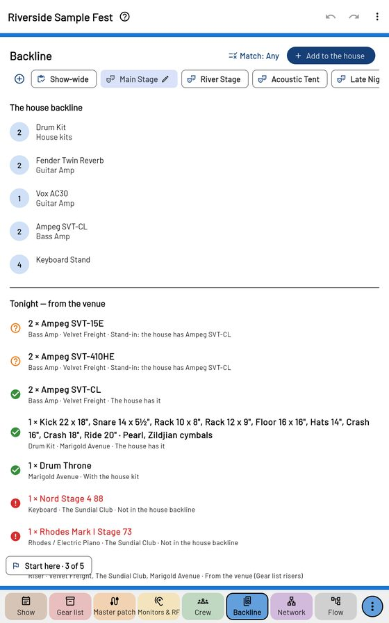

Backline

The house backline
+ Add to the house: kind, model, how many. A Show-wide chip shows the whole event's backline plan — fewest pieces, with tight moves between stages flagged.
Tonight — from the venue
What each act asks the venue for, checked against the house: green the house has it, orange a 2nd / 3rd choice or another model, red missing. A head stands in only for a head, a cab for a cab. In an act's window, Backline match is Exact, Close or Any.
Tonight — the bands bring
Their own gear, folded by kind; tap a piece a band wants from the venue instead.
⋮ → Backline company's QR (while the crew's QR is shared) opens the show on a Backline tab in the backline company's browser. ⋮ → Show → Print → Backline needs (PDF) is the same on paper.